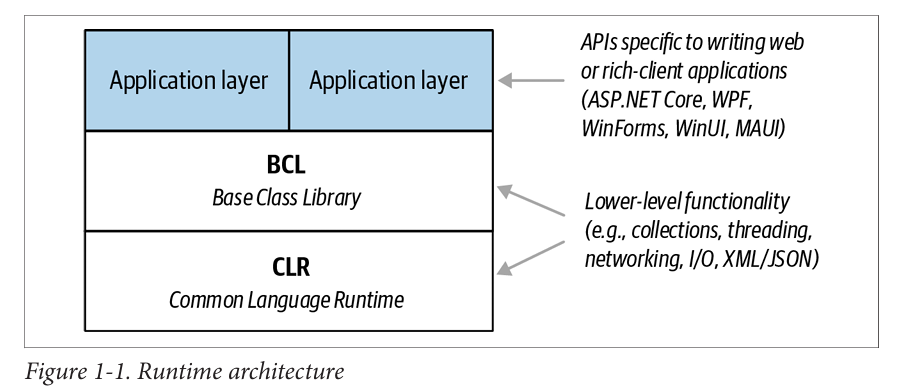
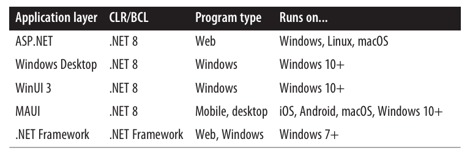

فصل اول: معرفی سیشارپ و داتنت
سیشارپ (#C) یک زبان برنامهنویسی همهمنظوره، مدرن، شیگرا و امن از نظر نوع داده (type-safe) است. هدف بنیادین این زبان از همان ابتدا، بالا بردن بهرهوری برنامهنویسان بوده است؛ به همین خاطر سیشارپ همواره تعادلی هوشمندانه میان سادگی در کدنویسی، قدرت بیان و کارایی بالای زمان اجرا برقرار میکند.
معمار ارشد سیشارپ از اولین نسخه تا کنون، آندرس هایلسبرگ (Anders Hejlsberg) بوده است؛ طراح نامآشنایی که پیش از این زبانهای محبوبی مانند Turbo Pascal و Delphi را خلق کرده بود. زبان سیشارپ کاملاً مستقل از سختافزار و سیستمعامل (platform-neutral) طراحی شده و میتواند روی گسترهٔ وسیعی از رانتایمهای مختلف اجرا شود.
شیءگرایی (Object Orientation)
سیشارپ پیادهسازی بسیار غنی و استانداردی از الگوی برنامهنویسی شیگرا (Object-Oriented Programming) را ارائه میدهد که بر سه اصل بنیادی کپسولهسازی (encapsulation)، ارثبری (inheritance) و چندریختی (polymorphism) استوار است.
کپسولهسازی به معنای ایجاد یک مرز محافظتشده پیرامون هر شیء است تا رفتار خارجی (عمومی یا public) آن از جزئیات پیادهسازی داخلی (خصوصی یا private) جدا شود. مهمترین ویژگیهای متمایزکننده سیشارپ در حوزه شیگرایی عبارتند از:
سیستم یکپارچه انواع (Unified Type System)
واحد سازندهٔ اساسی در سیشارپ، یک واحد کپسولهشده از دادهها و توابع است که به آن «نوع داده» یا تایپ (Type) میگوییم. سیشارپ دارای یک سیستم نوع یکپارچه است که در آن تمام تایپها در نهایت از یک کلاس پایهٔ مشترک ارثبری میکنند.
این یعنی چه با یک شیء بیزینسی پیچیده کار کنید و چه با یک عدد ساده مثل int، همهٔ آنها در یک سری قابلیتهای پایهای مشترک هستند. به عنوان مثال، روی نمونهٔ هر نوع دادهای در سیشارپ میتوانید متد ToString() را فراخوانی کرده و نمایش متنی آن را دریافت کنید.
کلاسها و اینترفیسها (Classes and Interfaces)
در مدلهای سنتی شیگرایی، تنها ساختار موجود برای تعریف انواع داده، کلاس (class) بود. اما در سیشارپ انواع دیگری هم تعریف شدهاند که برجستهترین آنها اینترفیس (interface) است.
یک اینترفیس شبیه کلاسی است که دادهای را درون خود ذخیره نمیکند؛ یعنی فقط رفتارها (متدها و امضاها) را تعریف میکند و نه وضعیت را. این تفکیک دو مزیت بزرگ دارد:
- امکان پیادهسازی ارثبری چندگانه را برای رفتارها فراهم میسازد.
- قرارداد و مشخصات (
specification) را کاملاً از نحوهٔ پیادهسازی (implementation) تفکیک میکند.
پروپرتیها، متدها و رویدادها (Properties, Methods, and Events)
در پارادایم شیگرایی کلاسیک، تمام توابع صرفاً به شکل متد (method) هستند. اما در سیشارپ، متدها فقط یکی از اعضای تابعی به شمار میروند؛ در کنار آنها، پروپرتیها (properties) و رویدادها (events) نیز حضور دارند:
- پروپرتیها: اعضایی هستند که وضعیت یک شیء را کپسوله میکنند (مانند رنگ یک دکمه یا متن یک برچسب).
- رویدادها: اعضایی هستند که واکنش نشان دادن به تغییرات وضعیت اشیاء را بسیار ساده و تمیز میکنند.
تأثیرپذیری از برنامهنویسی تابعی (Functional Programming)
با اینکه سیشارپ در اصل یک زبان شیگراست، اما از الگوهای مدرن برنامهنویسی تابعی نیز الهام گرفته است:
- رفتار با توابع به عنوان مقدار (
Functions as Values): با استفاده از دلیگیتها (Delegates) در سیشارپ، میتوانید متدها را درست مانند متغیرها به عنوان آرگومان به سایر توابع ارسال کنید یا از آنها خروجی بگیرید. - پشتیبانی از الگوهای خلوص تابعی (
Patterns for Purity): هستهٔ اصلی برنامهنویسی تابعی، پرهیز از تغییر مقادیر متغیرها و تکیه بر الگوهای اعلانی است. سیشارپ امکانات گستردهای برای این سبک تدارک دیده است:- عبارات لامبدا (
Lambda expressions): توابع بینامی که در همان لحظه نیاز تعریف میشوند و میتوانند متغیرهای محیط اطراف را ثبت (capture) کنند. - عبارات پرسوجو (
Query expressions): برای پردازش دادهها به صورت لیستی و شبیه به زبان SQL. - رکوردها (
Records): برای تعریف سریع انواع دادههای تغییرناپذیر (immutable) و فقطخواندنی.
- عبارات لامبدا (
ایمنی نوع داده (Type Safety)
سیشارپ زبانی ایمن از نظر نوع داده (type-safe) است؛ بدین معنا که نمونههای هر تایپ تنها از طریق قوانینی که خودِ آن تایپ تعریف کرده با یکدیگر تعامل دارند. این رویکرد یکپارچگی و سلامت داخلی هر نوع را تضمین میکند. برای نمونه، کامپایلر سیشارپ به شما اجازه نمیدهد با یک متغیر متنی (string) مانند یک عدد صحیح (int) رفتار کنید.
تایپ ایستا (Static Typing)
سیشارپ بر پایهٔ سیستم تایپ ایستا کار میکند؛ یعنی علاوه بر بررسی در زمان اجرا، صحت نوع دادهها در زمان کامپایل (compile time) بررسی و تضمین میشود.
بررسی ایستا بخش بزرگی از خطاهای نرمافزاری را قبل از اینکه برنامه اصلاً اجرا شود کشف و حذف میکند. این قابلیت بار سنگین پیدا کردن خطاهای تایپی را از روی دوش تستهای زمان اجرا برداشته و به کامپایلر میسپارد. در پروژههای بزرگ سازمانی، این ویژگی سبب پایداری و نگهداری بسیار راحتتر کدها میشود. همچنین قابلیتهایی نظیر IntelliSense در Visual Studio و ابزارهای تغییر ساختار کد (Refactoring) با تکیه بر تایپ ایستا با دقت ۱۰۰٪ کار میکنند.
نکته: سیشارپ از طریق کلمه کلیدی dynamic اجازه میدهد بخشهایی از کد به صورت پویا (داینامیک) تایپگذاری شوند، با این حال هستهٔ اصلی سیشارپ همواره ایستا و امن باقی میماند.
تایپ قوی (Strongly Typed)
سیشارپ یک زبان «قویاً نوعدار» محسوب میشود، زیرا قوانین نوع داده در آن به سختی اعمال میگردند. برای مثال، نمیتوانید متدی را که یک عدد صحیح میپذیرد با یک عدد اعشاری صدا بزنید، مگر آنکه ابتدا صریحاً آن را تبدیل (کست) کنید.
مدیریت حافظه (Memory Management)
سیشارپ مدیریت حافظه را به صورت کاملاً خودکار بر عهدهٔ رانتایم میگذارد. محیط زمان اجرای زبان مشترک (CLR) دارای یک زبالهروب یا بازیافتکنندهٔ حافظه به نام Garbage Collector (GC) است که به عنوان بخشی از برنامه شما اجرا شده و حافظهٔ اشیائی را که دیگر در دسترس نیستند آزاد میکند. این مکانیزم برنامهنویس را از درگیری با تخصیص و آزادسازی دستی حافظه بینیاز ساخته و خطاهای معروفی چون حافظهٔ رهاشده یا پوینترهای نامعتبر در زبانهایی مثل ++C را از بین میبرد.
البته پوینترها در سیشارپ حذف نشدهاند، بلکه برای اکثر کارهای برنامهنویسی غیرضروری گشتهاند. در بخشهای حساسی که به حداکثر کارایی نیاز است، میتوان با استفاده از بلاکهای نشانهگذاریشده با کلمه کلیدی unsafe مستقیماً از اشارهگرها و تخصیص مستقیم حافظه استفاده کرد.
پشتیبانی از پلتفرمها (Platform Support)
سیشارپ دارای رانتایمهایی است که پلتفرمهای زیر را پوشش میدهند:
- ویندوز (Windows Desktop): ساخت اپلیکیشنهای دسکتاپ، وب، سرور و خط فرمان.
- مک (macOS): ساخت وباپلیکیشنها، ابزارهای خط فرمان و برنامههای دسکتاپ (از طریق Mac Catalyst).
- لینوکس (Linux): ساخت نرمافزارهای سرور، سرویسهای بکاند و خط فرمان.
- اندروید و iOS: ساخت اپلیکیشنهای موبایل از طریق .NET MAUI.
- دیوایسهای ویندوز ۱۰/۱۱: کنسولهای Xbox، سرفیس هاب و هولولنز (از طریق UWP).
- مرورگر وب (WebAssembly): اجرای مستقیم کدهای سیشارپ در مرورگر با فناوری Blazor WebAssembly.
رانتایمها، CLR و BCL
پشتیبانی اجرایی از برنامههای سیشارپ از دو جزء اصلی تشکیل میشود: یک محیط زمان اجرای زبان مشترک (CLR) و یک کتابخانه کلاس پایه (BCL). یک رانتایم میتواند شامل لایههای بالاتری از کتابخانهها برای تولید برنامههای وب، موبایل یا دسکتاپ نیز باشد (شکل ۱-۱).

محیط زمان اجرای زبان مشترک (CLR)
محیط CLR سرویسهای اساسی زمان اجرا نظیر مدیریت خودکار حافظه و مدیریت خطاها (exceptions) را مدیریت میکند. کلمه «مشترک» (Common) به این حقیقت اشاره دارد که این رانتایم توسط زبانهای دیگری مانند #F و Visual Basic نیز به اشتراک گذاشته میشود.
سیشارپ یک زبان «مدیریتشده» (managed language) است؛ زیرا کد منبع شما ابتدا به یک زبان میانی به نام Intermediate Language (IL) کامپایل میشود. سپس CLR درست در لحظه اجرای برنامه، این کد IL را به کد ماشین مخصوص همان سختافزار (مانند x64 یا ARM) ترجمه میکند؛ فرآیندی که به Just-In-Time (JIT) Compilation معروف است. همچنین برای دستگاههایی با منابع محدود یا سیستمهایی با لود سریع، امکان کامپایل زودهنگام (Ahead-Of-Time یا AOT) نیز وجود دارد.
ظرف حاوی کدهای IL و اطلاعات تایپها را اسمبلی (Assembly) مینامیم که معمولاً فایلهای dll. یا exe. هستند. اطلاعات ساختاری تایپها که در اسمبلی ذخیره میشوند متادیتا (Metadata) نام دارند. با تکیه بر متادیتا، یک اسمبلی میتواند بدون نیاز به فایلهای سربرگ (Header) مجزا، تایپهای درون اسمبلیهای دیگر را شناسایی و مصرف کند.
ابزارهای مهندسی معکوس: با ابزارهایی مثل ildasm مایکروسافت میتوانید کدهای IL یک اسمبلی را بررسی کنید. ابزارهای پیشرفتهتری مثل ILSpy یا dotPeek حتی میتوانند کد IL را مستقیماً به کد اولیهٔ سیشارپ بازگردانند (Decompile کنند).
کتابخانه کلاسهای پایه (BCL)
هر CLR همیشه به همراه مجموعهای از اسمبلیهای اساسی عرضه میشود که به آن Base Class Library (BCL) میگوییم. این کتابخانهها امکانات کلیدی برنامهنویسی نظیر مجموعهها (Collections)، ورودی/خروجی فایل (I/O)، پردازش متن، کار با JSON و XML، شبکه، رمزنگاری و همزمانی را در اختیار برنامهنویس قرار میدهند.
رانتایمهای مختلف در داتنت
رانتایم در واقع بستهای است که دانلود و نصب میکنید و شامل CLR، کتابخانههای BCL و کتابخانههای تخصصی نوع پروژه است:
| نوع لایه اپلیکیشن | هسته CLR / BCL | خروجی برنامه | پلتفرمهای مقصد |
|---|---|---|---|
| ASP.NET Core | .NET 8 | وب، API و میکروسرویس | ویندوز، لینوکس، مک |
| Windows Desktop | .NET 8 | نرمافزارهای دسکتاپ (WPF / WinForms) | ویندوز ۱۰ و ۱۱ |
| WinUI 3 | .NET 8 | اپلیکیشنهای مدرن ویندوز | ویندوز ۱۰ و ۱۱ |
| .NET MAUI | .NET 8 | اپلیکیشنهای چندسکویی موبایل و دسکتاپ | iOS، اندروید، مک، ویندوز |
| .NET Framework | .NET Framework 4.8 | اپلیکیشنهای کلاسیک ویندوز و وب | ویندوز ۷ به بعد |

داتنت ۸ (.NET 8)
داتنت ۸ رانتایم مدرن، سریع و متنباز پرچمدار مایکروسافت است که این کتاب منحصراً بر پایهٔ آن تدوین شده است. تاریخچه نسخههای این پلتفرم به این ترتیب بوده است:
$$\text{.NET Core 1.x} \rightarrow \text{2.x} \rightarrow \text{3.x} \rightarrow \text{.NET 5} \rightarrow \text{.NET 6} \rightarrow \text{.NET 7} \rightarrow \text{.NET 8}$$
شرکت مایکروسافت پس از نسخه ۳ واژه «Core» را حذف کرد و از نسخه ۴ نیز عبور نمود تا تداخلی با .NET Framework 4.x قدیمی ایجاد نشود. این یعنی اسمبلیهای کامپایلشده روی .NET Core تا .NET 7 معمولاً بدون هیچ تغییری روی .NET 8 نیز اجرا میشوند.
رانتایمهای خاص (Niche Runtimes)
- موتور بازیسازی Unity: از زبان سیشارپ به عنوان زبان اسکریپتنویسی گیمپلی استفاده میکند.
- فریمورک UWP: برای ساخت برنامههای ایمن در Windows Store روی Xbox و HoloLens به کار میرود.
- ادغام با SQL Server: با استفاده از SQL Server CLR میتوانید توابع محاسباتی، استورد پروسیجرها و توابع تجمیعی را با سیشارپ نوشته و مستقیماً درون پایگاهداده فراخوانی کنید.
سیر تکاملی و تاریخچهٔ نسخههای سیشارپ
در ادامه، امکانات جدیدی که در هر نسخه به زبان سیشارپ افزوده شدهاند را به صورت معکوس (از جدیدترین نسخه به قدیم) مرور میکنیم:
ویژگیهای جدید در سیشارپ ۱۲ (C# 12)
سیشارپ ۱۲ همزمان با انتشار .NET 8 و Visual Studio 2022 عرضه شد.
۱. عبارتهای مجموعهای (Collection Expressions)
به جای تعریف سنتی آرایهها، اکنون میتوانید از براکتهای کروشه ([]) برای مقداردهی استفاده کنید:
// روش قبلی
char[] vowels = {'a', 'e', 'i', 'o', 'u'};
// روش جدید در سیشارپ ۱۲
char[] vowels = ['a', 'e', 'i', 'o', 'u'];
مزیت بزرگ این سینتکس، یکپارچگی آن برای سایر کالکشنها مثل List، HashSet و حتی Span است:
List<char> list = ['a', 'e', 'i', 'o', 'u'];
HashSet<char> set = ['a', 'e', 'i', 'o', 'u'];
ReadOnlySpan<char> span = ['a', 'e', 'i', 'o', 'u'];
همچنین با عملگر اسپرد (..) میتوانید عناصر یک کالکشن را درون کالکشن دیگر پخش کنید:
int[] first = [1, 2, 3];
int[] combined = [..first, 4, 5, 6]; // [1, 2, 3, 4, 5, 6]
۲. سازندههای اولیه در کلاسها و استراکتها (Primary Constructors)
از سیشارپ ۱۲ میتوانید پارامترهای سازنده را مستقیماً جلوی نام کلاس یا استراکت بنویسید:
class Person(string firstName, string lastName)
{
public void Print() => Console.WriteLine(firstName + " " + lastName);
}
// استفاده
var p = new Person("Alice", "Jones");
p.Print(); // Alice Jones
۳. مقادیر پیشفرض برای پارامترهای لامبدا (Default Lambda Parameters)
مشابه متدهای عادی، در عبارات لامبدا نیز میتوانید مقدار پیشفرض تعیین کنید:
var print = (string message = "سلام دنیا") => Console.WriteLine(message);
print("درود"); // درود
print(); // سلام دنیا
۴. تعریف نام مستعار برای هر نوع دلخواهی (Alias Any Type)
دستور using اکنون میتواند برای هر نوع دادهای، حتی تاپلها و آرایهها، یک نام مستعار تعریف کند:
using Point = (int X, int Y);
Point pt = (10, 20);
Console.WriteLine(pt.X); // 10
ویژگیهای جدید در سیشارپ ۱۱ (C# 11)
سیشارپ ۱۱ به همراه .NET 7 و Visual Studio 2022 معرفی شد.
۱. رشتههای خام چندخطی (Raw String Literals)
با قرار دادن رشته درون حداقل سه کوتیشن (""")، میتوانید هر متنی را بدون نیاز به اسکیپ کردن کاراکترهایی مثل \ یا " بنویسید:
string json = """
{
"name": "Ali",
"role": "Developer"
}
""";
۲. رشتههای UTF-8 با پسوند u8
با افزودن پسوند u8، لیترالهای متنی به جای UTF-16 مستقیماً به صورت بایتهای UTF-8 ذخیره میشوند که برای بهینهسازی سرعت در کدهای حساس فوقالعاده است:
ReadOnlySpan<byte> utf8 = "Hello"u8;
۳. الگوهای لیستی (List Patterns)
امکان تطبیق الگو بر روی عناصر آرایهها و لیستها:
int[] numbers = [0, 1, 2, 3, 4];
Console.WriteLine(numbers is [0, 1, .., 4]); // True (دو نقطه یعنی هر تعداد عنصر میانی)
Console.WriteLine(numbers is [_, 1, 2, 3, 4]); // True (آندرلاین یعنی یک عنصر با هر مقداری)
۴. اعضای الزامی (Required Members)
با استفاده از کلمه کلیدی required، مقداردهی پروپرتیها هنگام ساخت شیء اجباری میشود:
class Book
{
public required string Title { get; init; }
}
var b1 = new Book { Title = "C# 12 in a Nutshell" }; // صحیح
// var b2 = new Book(); // خطای کامپایل: فیلد Title باید مقداردهی شود!
۵. اعضای استاتیک مجازی در اینترفیسها و ریاضیات جنریک (Generic Math)
امکان تعریف عملگرهای ریاضی استاتیک در اینترفیسها فراهم شد که نوشتن الگوریتمهای محاسباتی عمومی را به واقعیت بدل کرد:
T Add<T>(T a, T b) where T : INumber<T> => a + b;
ویژگیهای جدید در سیشارپ ۱۰ (C# 10)
همراه با .NET 6 معرفی شد:
- نیماسپیسهای فایلی (
File-scoped namespaces): حذف کروشههای باز و بسته برای کل فایل:namespace MyProject; // اعمال برای کل فایل بدون نیاز به دندانه اضافه - یوزینگهای سراسری (
global using): تعریف یوزینگهایی که در تمام فایلهای پروژه اعمال میشوند. - استراکتهای رکوردی (
Record structs): افزودن قابلیتهای رکورد (برابری ارزشی) به استراکتها. - سازندههای بدون پارامتر برای استراکتها.
ویژگیهای کلیدی در نسخههای پیشین (C# 9 تا C# 2)
سیشارپ ۹ (C# 9.0)
- رکوردها (
Records): تعریف آسان کلاسهای فقطخواندنی و غیرقابل تغییر همراه با عملگرwith. - دستورات سطح بالا (
Top-level statements): نوشتن برنامه بدون نیاز به تعریف سنتی کلاسProgramو متدMain:Console.WriteLine("Hello, World!"); - پروپرتیهای
init-only: پروپرتیهایی که فقط هنگام ساخت شیء قابل مقداردهی هستند.
سیشارپ ۸ (C# 8.0)
- نوعهای ارجاعی نالپذیر (
Nullable Reference Types): محافظت قدرتمند کامپایلر در برابر خطای کشندهٔNullReferenceException. - جریانهای ناهمگام (
Async Streams): پشتیبانی ازawait foreachبا اینترفیسIAsyncEnumerable<T>. - عبارتهای سوئیچ مدرن (
Switch expressions): ساختاری شبیه به تطبیق الگوی زبانهای تابعی. - بازه و اندیسها (
Indices and Ranges): کار با عناصر از انتهای آرایه با عملگر^و برش با...
سیشارپ ۷ (C# 7.x)
- تاپلها (
Tuples): بازگرداندن چندین مقدار از یک متد با سینتکس فشرده(int x, string y). - توابع محلی (
Local Functions): تعریف متد درون یک متد دیگر. - تطبیق الگو (
Pattern Matching): با استفاده از کلماتisوswitch.
سیشارپ ۶ (C# 6.0)
- درونیابی رشتهها (
String Interpolation): استفاده از علامت$""به جایstring.Format. - عملگر شرطی نال (
?.): پیشگیری آسان از خطای نال در فراخوانی متدها و اعضا. - اعضای اکسپرشنبادی (
Expression-bodied members): نوشتن متدها و پروپرتیهای یکخطی با=>.
سیشارپ ۵ (C# 5.0)
- انقلاب برنامهنویسی ناهمگام: معرفی کلمات کلیدی حیاتی
asyncوawaitکه شیوهٔ نوشتن کدهای غیرهمزمان در دنیای وب و نرمافزار را برای همیشه دگرگون ساخت.
سیشارپ ۴ (C# 4.0)
- انقیاد پویا (
Dynamic Binding): کلمه کلیدیdynamicبرای کار با اشیاء داینامیک و تبادل داده با زبانهای تفسیری. - پارامترهای اختیاری و نامدار (
Optional and Named Parameters).
سیشارپ ۳ (C# 3.0)
- معرفی زبان یکپارچه پرسوجو (
LINQ): بزرگترین جهش معماری داده در تاریخ زبان سیشارپ. - عبارات لامبدا (
Lambda Expressions) و متدهای توسعه (Extension Methods). - کلمه کلیدی
varو نوعهای بینام (Anonymous Types).
سیشارپ ۲ (C# 2.0)
- پشتیبانی از جنریکها (
Generics): ایجاد کلاسها و کالکشنهای تایپامن مانند<List<T. - انواع مقداری نالپذیر (
Nullable Types): نوشتن?intبرای ذخیره مقدارnullدر تایپهای عددی. - تکرارکنندهها با
yield return.
جمعبندی فصل
در این فصل با نقشهٔ کلان اکوسیستم داتنت و زبان سیشارپ آشنا شدیم. اکنون که درک درستی از ماهیت این زبان چندمنظوره، ایمنی نوع، معماری رانتایم و قابلیتهای کلیدی جدیدترین نسخههای آن پیدا کردهاید، آمادهاید تا در فصول بعدی وارد عمق سینتکس، گرامر، متغیرها و سازوکارهای بنیادین سیشارپ ۱۲ شوید.